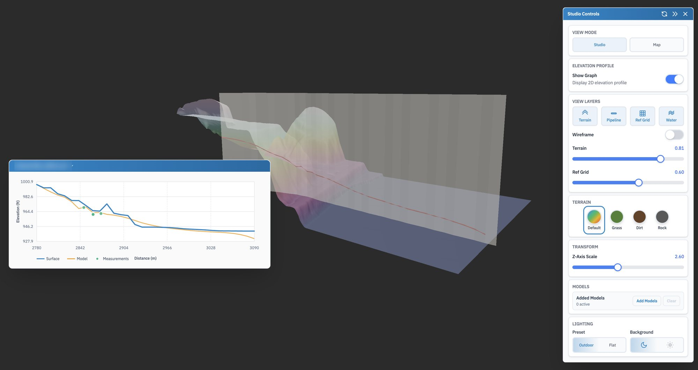
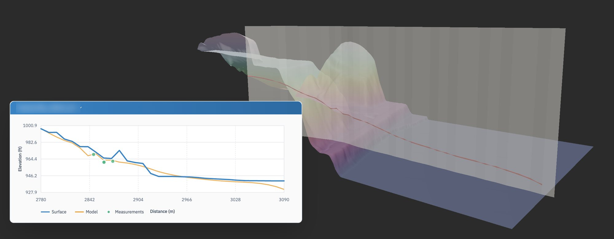

Industry work · pipeline integrity · 3D terrain
3D Pipeline Viewer
A buried pipe is hard to picture on a flat map, so this one lets you turn the ground over and look.
- Company
- Earthbound AI, which models natural hazards for pipeline operators
- Role
- GIS engineer, primary developer
- Years
- 2025–2026
- Stack
- React · React Three Fiber · Mapbox GL · FastAPI · DuckDB · GeoParquet on S3

One stretch of line in studio mode. The stretch's name is blurred.
The brief
Check the model against the ground
Earthbound builds a model of where each pipe runs underground. Engineers need to see that model in its real setting, against the hills and the river banks it passes under, and check it against the depths surveyors actually measured. A profile line on a 2D map loses most of that.
The viewer loads a stretch of terrain and pipe as a 3D model you can turn. I was its primary developer.
01 · Studio
Terrain, pipe and the profile beside it
The terrain is coloured by height, and a curtain hangs down along the pipe's route with the pipe drawn on it, so you can see how deep it sits under each rise and dip. The chart beside it flattens the same line into a profile: the ground surface in blue, the modelled pipe in orange, and the survey measurements as dots, so a model that drifts from what was measured is easy to spot.
- Layers for terrain, pipe, a reference grid and water, each with its own opacity
- Vertical exaggeration, since a few feet of cover vanish at true scale over a long stretch
- Terrain styles from the height ramp to grass, dirt and rock, plus a wireframe

The same stretch, closer. On the profile, the green survey dots sit close to the modelled pipe.
On the map
From the whole network to one slope
Studio mode shows a model on its own. Map mode sets the same 3D models onto a Mapbox map in their true position, so an engineer can start from the whole network and fly down to a single crossing. The terrain and pipe come from FastAPI services reading GeoParquet on S3 through DuckDB, the same services as the hydrotechnical dashboard.
- 3D studioReact Three Fiber
- Elevation profileweb app
- Models on the mapMapbox GL
- Terrain and pipe dataFastAPI and DuckDB